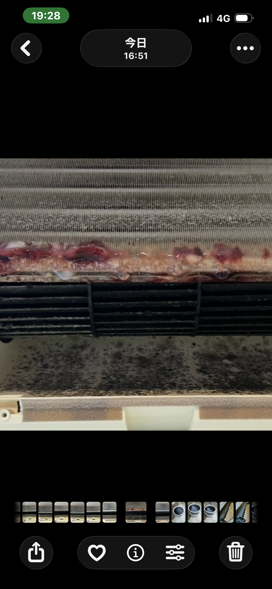
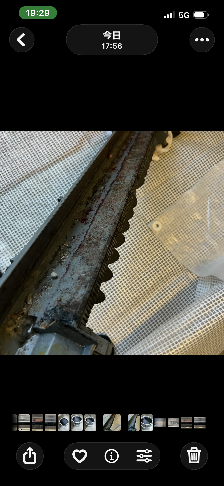
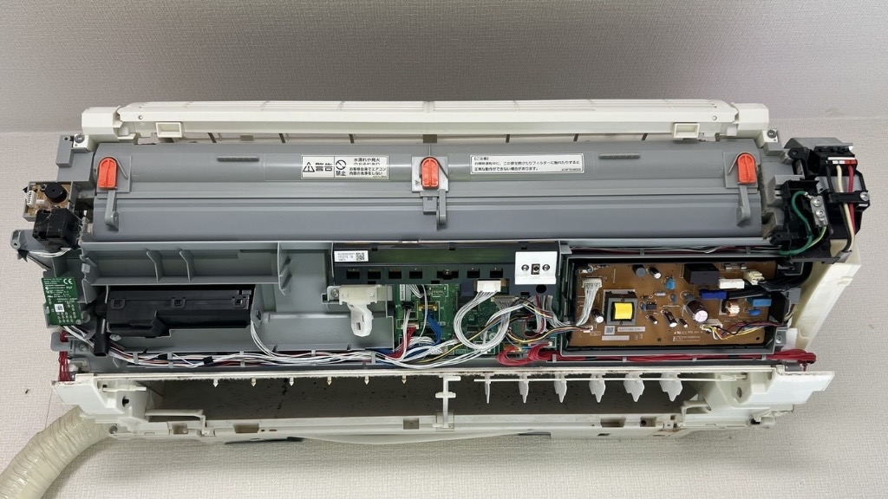
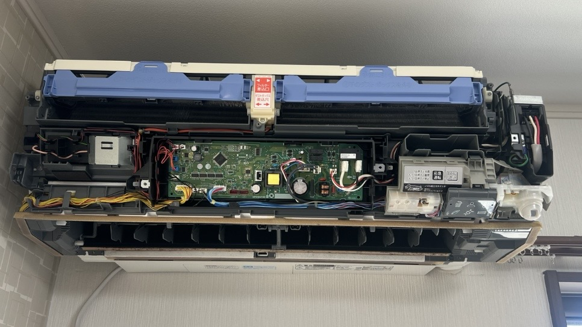
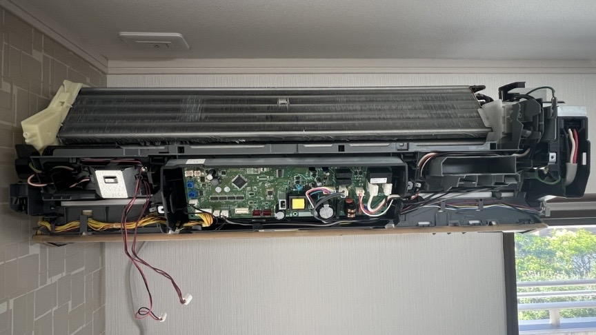
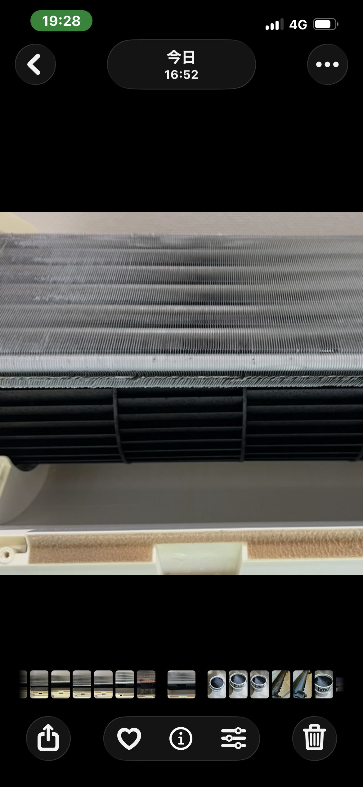
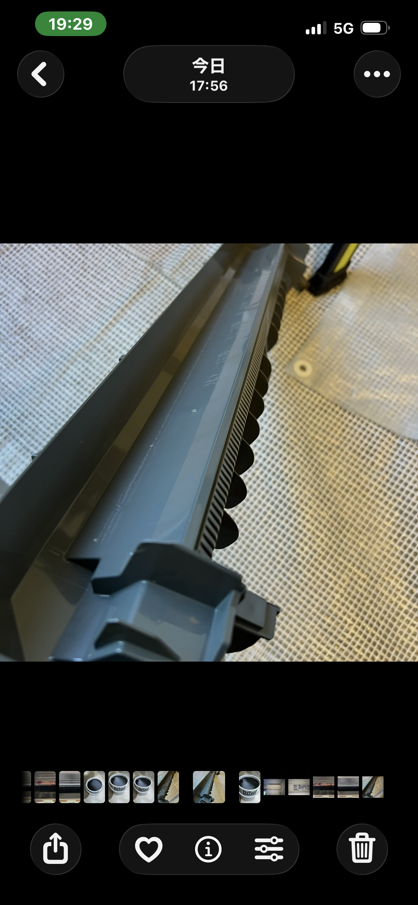
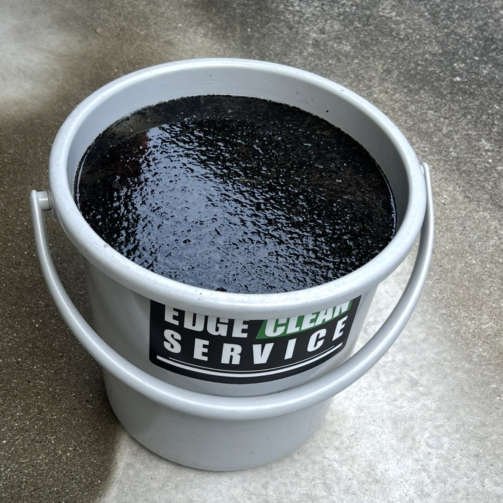

STAR
STAR
市販のエアコン洗浄スプレー
使っちゃダメ！
ホームセンターや
ドラッグストアなどでも
簡単に購入できる、
市販のエアコン洗浄スプレー。
「自分でエアコンを
掃除できるなら便利」
と思って使ったことが
ある方も多いのでは
ないでしょうか。
ネットやSNSを見ると、
「市販のエアコン洗浄スプレーは
使わない方がいい」
という記事も
たくさん出てきます。
その理由として、
表面はキレイになったように
見えても、
汚れを奥へ
押し込んでいるだけ。
そんな説明を
見たことがあるかも
しれません。
もちろん、
それも考えられる
問題のひとつです。
でも、
私がお伝えしたいのは
そんな浅い話だけでは
ありません。
私は普段、
実際にエアコンを分解し、
内部を洗浄しています。
だからこそ
見える部分があります。
今回は、
実際の現場で確認した状態と
エアコン内部の
構造を見ながら、
なぜ私が
市販のエアコン洗浄スプレーを
おすすめしないのか。
実際の現場写真も
お見せしながら、
私なりの考え方を
シェアします。
実際の現場です
まず見ていただきたいのが、
実際に施工したエアコンです。
今回のエアコンは、
三菱電機「霧ヶ峰」の
スタンダードモデル。
設置されていたのは、
2階の子ども部屋です。
三菱電機の霧ヶ峰は、
エアコンクリーニング業者の
間でも、
おすすめするメーカーとして
名前が挙がることの多い
シリーズです。
しかも今回は、
複雑な
お掃除機能付きではなく、
比較的シンプルな
スタンダードエアコン。
本来であれば、
内部に余計な機構が少なく、
空気の流れを邪魔する物も
少ない。
私は比較的、
汚れにくい構造だと
考えています。
ところが、
実際に分解してみると……。

実際に分解した
エアコン内部です。
熱交換器だけでなく、
その奥や下側にも
強い汚れが確認できます。
いつもの汚れ方と違う
エアコンは使えば汚れます。
これは当然です。
カビも生えます。
ホコリも付着します。
設置環境や使用時間によっては、
スタンダードエアコンでも
かなり汚れることがあります。
だから、
この状態を見ただけで
「市販スプレーを使ったから
こうなった」
と断定するつもりはありません。
ただ、
普段から数多くの
エアコンを分解し、
ドレンパンまで取り外して
内部を直接見ている
立場からすると、
今回の状態には
違和感がありました。
いつもの汚れ方と違う。
この機種で、
なぜここまで？
そう感じる状態でした。
そしてお客様に確認すると、
これまで市販の
エアコン洗浄スプレーを
繰り返し使用されていたとのこと。
市販スプレーだけが
今回の状態を作ったとは
言えません。
使用環境。
使用時間。
湿度。
日頃のお手入れ。
さまざまな条件が
重なっている可能性があります。
しかし、
市販スプレーの使用が
原因の一端を担っている
可能性は
十分に考えられる。
実際の内部を見た私は、
そう感じました。
表面だけキレイになれば
本当に掃除できた？
市販のエアコン洗浄スプレーは、
基本的にエアコンを
大きく分解せずに使用します。
見えている熱交換器へ
スプレーを吹きかける。
すると、
表面のホコリや汚れが流れて、
「キレイになった！」
と感じるかもしれません。
でも、
エアコンの内部は
そこで終わりではありません。
熱交換器の下には、
冷房時に発生した
結露水を受けるための
「ドレンパン」
があります。
熱交換器から流れ落ちた物は、
その先へ進みます。

分解した
ドレンパンの内部です。
外からスプレーしている
だけでは、
この部分を見ることは
できません。
汚れは消えた？
それとも移動した？
スプレーを吹きかけて、
熱交換器の表面から
汚れが見えなくなった。
だから、
汚れが無くなった。
必ずしも、
そうとは限りません。
剥がれた汚れは
どこへ行くのでしょうか。
熱交換器の奥。
熱交換器の下。
ドレンパン。
排水経路。
送風ファン周辺。
エアコン内部には、
外から見えない場所が
たくさんあります。
プロのエアコンクリーニングでは、
洗剤を吹きかけるだけでは
ありません。
大量の水を使って、
汚れや洗剤成分を
エアコンの外へ
排出していきます。
さらに私は、
必要な部品を分解し、
普段は見えない場所まで
確認しながら
洗浄しています。
ここが、
市販スプレーを
吹きかけることと、
エアコンクリーニングの
大きな違いだと考えています。
もっと怖いのは
「見えない電装部品」
ここまでは、
汚れや洗剤が
内部へ残る可能性についての
話でした。
でも、
私が市販スプレーを
おすすめしない理由は、
それだけではありません。
特に注意してほしいのが、
多機能な
お掃除機能付きエアコンです。
お掃除機能付きエアコンには、
スタンダードエアコンには
存在しない、
さまざまな部品が
搭載されています。
モーター。
センサー。
配線。
コネクター。
基板。
お掃除ユニット。
機種によって構造は違いますが、
内部には多くの
電装部品が存在しています。
では、
実際の内部を見てみましょう。

パナソニック
「エオリアX」の内部です。
外装を取り外すと、
多くの電装部品や配線が
存在していることが
分かります。
続いてこちら。


三菱電機「霧ヶ峰」の
お掃除機能付きエアコンです。
分解を進めることで、
普段は見えない
内部構造が現れます。
でも普段は、
これ全部見えていません
ここが重要です。
今お見せした電装部品は、
普段エアコンを使っている
状態では、
ほとんど見えていません。
カバー。
フィルター。
お掃除ユニット。
さまざまな部品の
奥に隠れています。
市販スプレーを使う時、
その奥に何があるのか。
スプレーした液体が
どこまで届くのか。
どこへ流れるのか。
すべて確認できる
でしょうか？
私は、
普段からエアコンを分解して
内部構造を見ています。
だからこそ思います。
この状態が見えていないまま、
外側から液体を吹きかける。
私は怖くてできません。
「熱交換器だけなら大丈夫？」
もちろん、
市販スプレーの製品ごとに
使用方法や注意事項は
異なります。
指定された場所へ
正しく使用することが
前提です。
しかし、
エアコンの内部構造は
機種によって大きく違います。
スタンダード。
お掃除機能付き。
メーカー。
シリーズ。
年式。
同じように見える
壁掛けエアコンでも、
内部構造は
まったく同じでは
ありません。
そして、
スプレーは液体です。
吹き付けた場所だけに
必ず留まるとは
限りません。
奥へ飛ぶ。
下へ垂れる。
部品を伝う。
隙間へ入る。
その先に何があるのか。
確認できない状態で
液体を吹きかけること。
私はそこに
大きなリスクを感じています。
プロがわざわざ
分解・養生する理由
エアコンクリーニング業者は、
ただ洗剤と水を
強く吹きかけているわけでは
ありません。
洗浄前に、
濡らしてはいけない場所を
確認します。
電装部品を確認します。
必要に応じて
部品を取り外します。
そして、
水や洗剤が
意図しない場所へ入らないように
養生します。
機種によっては、
洗う作業そのものより、
分解や養生に
時間がかかることさえあります。
それは、
エアコンが
電化製品だからです。
「汚れが落ちる液体だから
吹きかける」
それだけで済むなら、
私たちも
こんな面倒なことは
しません。
市販スプレーそのものを
悪者にしたいわけではありません
ここは誤解してほしくありません。
私は、
すべての
市販エアコン洗浄スプレーを
一括りにして、
「使えば必ず故障する」
「使えば必ず汚れる」
と言っているわけではありません。
製品によって成分も違えば、
使用方法も違います。
エアコン側の構造も違います。
正しく使用して、
何の問題も起きないケースも
当然あると思います。
ただ、
私は仕事として
エアコンを分解しています。
表からは見えない場所も
日常的に見ています。
その立場から、
「自分の家のエアコンに
市販の洗浄スプレーを使うか？」
と聞かれたら、
私は使いません。
お客様から、
「使った方がいいですか？」
と聞かれても、
おすすめしません。
それが、
実際の内部を見ている
私の答えです。
じゃあ自分で何をすればいい？
エアコンのお手入れを
すべて業者に任せる必要は
ありません。
ご家庭でも、
安全にできることはあります。
代表的なのが、
フィルターのお手入れです。
フィルターを
定期的に掃除する。
冷房後は、
機種の内部クリーン機能や
送風などを適切に
活用する。
そして、
分解しなければ
確認できない場所や、
電装部品が近くにある場所まで
無理に自分で洗おうとしない。
私は、
その線引きが
大切だと考えています。
関連記事
フィルター掃除の
正しい頻度とやり方はコチラ
関連記事
冷房後の「送風」で
カビを防ぐ方法はコチラ
ここまでキレイになります
今回のエアコンも、
分解して、
内部を確認しながら
しっかり洗浄しました。

洗浄後の内部です。
見える表面だけではなく、
内部に溜まった汚れまで
洗浄していきます。
そして、
取り外したドレンパンも。

ここまでキレイになります。
分解することで、
普段は見えない部分まで
直接確認しながら
洗浄できます。
これだけの汚れが
内部にありました
そして、
今回の洗浄で
エアコン内部から
出てきた汚れがこちらです。

表面だけを見ていると、
エアコン内部が
どんな状態になっているのかは
なかなか分かりません。
だから私は、
「見える場所がキレイになった」
だけで、
「エアコン内部まで
キレイになった」
とは考えません。
実際の現場も見てみる
今回ご紹介したエアコンは、
実際に私が施工したものです。
使用していた機種。
分解した状態。
洗浄前。
洗浄後。
実際の施工内容については、
施工事例として
詳しく公開します。
関連する施工事例
市販スプレーを使用していた
実際の施工事例はコチラ
最後に
市販のエアコン洗浄スプレーを使えば、
見えている熱交換器の表面は
キレイになったように
感じるかもしれません。
でも、
エアコンの内部は
見えている部分だけでは
ありません。
熱交換器の奥。
ドレンパン。
送風ファン。
排水経路。
そして、
機種によっては
その周辺に存在する
たくさんの電装部品。
外から見えない場所が
たくさんあります。
今回ご紹介したエアコンが
ここまで汚れた原因を、
市販スプレーだけだと
断定することは
できません。
しかし、
普段からエアコンを分解し、
内部を直接見ている
職人として、
私は今回の状態を
「普通の汚れ方だった」
とは感じませんでした。
そして、
内部構造を知れば知るほど、
中が見えない状態で
液体を吹きかけることを
私はおすすめできません。
自分でできるお手入れは、
自分でやる。
分解が必要な場所は、
無理に触らない。
それだけでも、
余計なトラブルを避けながら
エアコンを長く使うことに
つながると思います。
市販のエアコン洗浄スプレー。
手軽だからこそ、
使う前に一度、
その液体の先に
何があるのか。
考えてみてください。
内部の汚れが気になる場合は
プロにご相談ください
フィルターをキレイにしても、
「エアコンから
嫌なニオイがする」
「吹き出し口に
黒い汚れが見える」
「奥の方に
カビが見える」
そんな場合は、
フィルターより奥に
汚れが溜まっている
可能性があります。
内部の送風ファンや
熱交換器などに付着した汚れは、
無理にご自身で分解・洗浄せず
プロにお任せください。
見えない場所まで、
しっかり確認しながら
洗浄します。